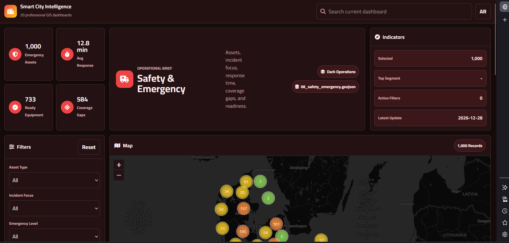

Road / Infrastructure Documentation
Transforming road condition survey data into maintenance priorities.
A GIS workflow for linking road condition, field photos, complaints, priorities, and printable reports in one decision-ready dashboard.
Problem
Road and infrastructure teams needed a reliable way to connect field condition, complaints, photos, and maintenance priorities for management review.
My Role
Designed the GIS workflow, structured field records, organized map layers, and prepared dashboard concepts for prioritization and reporting.
Workflow
- Define road condition categories and inspection attributes.
- Connect field observations, images, and status values to road segments.
- Build maintenance priority maps and dashboard indicators.
- Prepare printable reporting views for managers and engineers.
- Remove sensitive identifiers from portfolio screenshots.
Results / Impact
55 kmroad documentation context
Prioritymaintenance mapping
Reportsprint-ready outputs
Visual Proof
